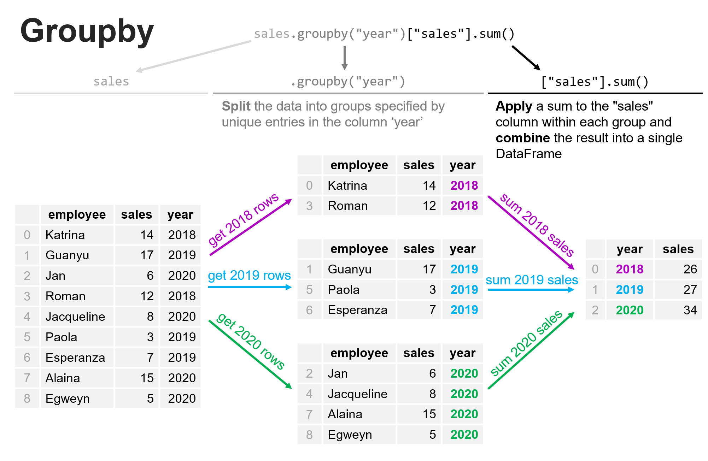
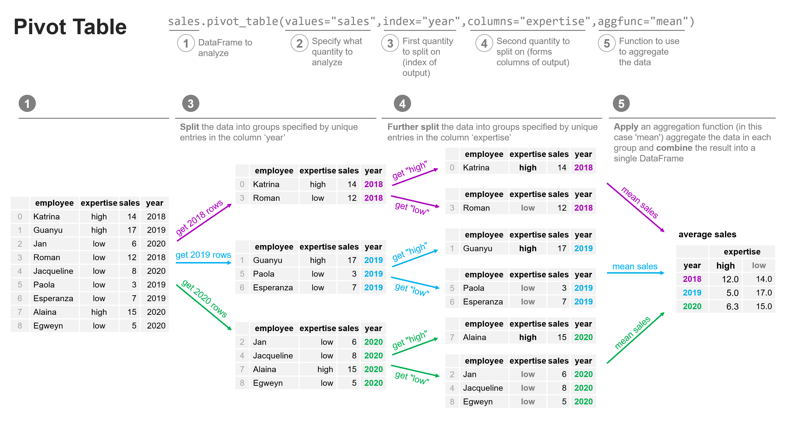

Grouping datasets
Contents
Grouping datasets#
Now that we’ve explored how to effectively combined our data into a single DataFrame, we can explore a common set of operations for summarizing data based on shared characteristics. Let’s jump in with an example. Let’s say we have the following dataset that describes the number of car sales at a dealership over three years. In that time, there were 9 employees who each worked there for a year, and different years had different numbers of employees.
import pandas as pd
sales = pd.DataFrame(data={
'employee':['Katrina','Guanyu','Jan','Roman','Jacqueline','Paola','Esperanza','Alaina','Egweyn'],
'sales':[14,17,6,12,8,3,7,15,5],
'year':[2018,2019,2020,2018,2020,2019,2019,2020,2020]
})
sales
| employee | sales | year | |
|---|---|---|---|
| 0 | Katrina | 14 | 2018 |
| 1 | Guanyu | 17 | 2019 |
| 2 | Jan | 6 | 2020 |
| 3 | Roman | 12 | 2018 |
| 4 | Jacqueline | 8 | 2020 |
| 5 | Paola | 3 | 2019 |
| 6 | Esperanza | 7 | 2019 |
| 7 | Alaina | 15 | 2020 |
| 8 | Egweyn | 5 | 2020 |
We want to answer two questions:
What year was the best for the number of sales?
Which year was the best for the number of sales per employee?
Let’s start with Question 1. To answer this, we need to know how many sales there were in each year. We could do this manually, summing the values of sales for each year and reporting the results; but we couldn’t do this by hand practically if this list had 1 million entries in it. This is where the groupby method shines.
Groupby:#
We can use a process that is facilitated by groupby to (a) split the data into groups, (b) apply a function to the contents of each group independently, and then (c) combine the data back into a single DataFrame. The figure below shows how we can group by ‘year’, and sum the data from the ‘sales’ column, all in one simple expression.

sales_by_year = sales.groupby("year")["sales"].sum()
sales_by_year
year
2018 26
2019 27
2020 34
Name: sales, dtype: int64
From the data above, we can see that 2020 was clearly the best year for sales of the 3 years considered here.
Now let’s think through Question 2, above: which year was the best for the number of sales per employee? We need some additional data here. We need the data from Question 1 on the number of sales per year, but we also need to count how many employees there were each year:
employees_by_year = sales.groupby("year")["employee"].count()
employees_by_year
year
2018 2
2019 3
2020 4
Name: employee, dtype: int64
Now let’s combine these into a single DataFram. You don’t have to do this (in fact, programmatically there are often many ways of accomplishing your objective), but it will make the data easier to probe, especially if you had a larger dataset.
question_2_data = pd.merge(sales_by_year,employees_by_year,on='year',how='left')
question_2_data
| sales | employee | |
|---|---|---|
| year | ||
| 2018 | 26 | 2 |
| 2019 | 27 | 3 |
| 2020 | 34 | 4 |
Now let’s compute the number of sales by employee:
question_2_data['sales_per_employee'] = question_2_data['sales'] / question_2_data['employee']
question_2_data
| sales | employee | sales_per_employee | |
|---|---|---|---|
| year | |||
| 2018 | 26 | 2 | 13.0 |
| 2019 | 27 | 3 | 9.0 |
| 2020 | 34 | 4 | 8.5 |
And there we have our answer to Question 2 - the best year for the number of sales by employee was 2018 even though the total number of sales in 2020 was higher.
Grouping in multiple dimensions with pivot_tables#
Using the groupby method, we were able to group data in the above examples according to year, and calculate some aggregate measure of the examples in each group. In our example, we calculated the total sales in each year. But what if we wanted to break it down further? Let’s consider if our sales data had an extra column, called ‘expertise’ as shown below. The new column represents the level of expertise of a sales representative as either “high” or “low” according to the judgement of their colleagues to see if sales were random or if their skill was correlated with their sales.
sales = pd.DataFrame(data={
'employee':['Katrina','Guanyu','Jan','Roman','Jacqueline','Paola','Esperanza','Alaina','Egweyn'],
'sales':[14,17,6,12,8,3,7,15,5],
'expertise':['high','high','low','low','low','low','low','high','low'],
'year':[2018,2019,2020,2018,2020,2019,2019,2020,2020]
})
sales
| employee | sales | expertise | year | |
|---|---|---|---|---|
| 0 | Katrina | 14 | high | 2018 |
| 1 | Guanyu | 17 | high | 2019 |
| 2 | Jan | 6 | low | 2020 |
| 3 | Roman | 12 | low | 2018 |
| 4 | Jacqueline | 8 | low | 2020 |
| 5 | Paola | 3 | low | 2019 |
| 6 | Esperanza | 7 | low | 2019 |
| 7 | Alaina | 15 | high | 2020 |
| 8 | Egweyn | 5 | low | 2020 |
This presents a new question: what were average sales per employee by year AND by the level of expertise. In this case, we don’t just want to know what the average sales were in 2018 across the employees, we want to know what the average sales in 2018 were for the “high” expertise employees and the “low” expertise employees, respectively. To accomplish this, we can use pivot_tables, as shown in the figure below:

Now lets try that for ourselves:
avg_sales = sales.pivot_table(values="sales",index="year",columns="expertise",aggfunc="mean")
avg_sales
| expertise | high | low |
|---|---|---|
| year | ||
| 2018 | 14.0 | 12.000000 |
| 2019 | 17.0 | 5.000000 |
| 2020 | 15.0 | 6.333333 |
Summary#
Grouping data along either one characteristic (groupby) or two (or more) characteristics (pivot_table) can allow us to quickly aggregate our data into the format we need to be able to answer key data science questions. Understanding how to use these tools programmatically is a significant advantage for data preparation and analysis. We’ve talked quite a bit about preparing data up to this point. In the next lesson, you’ll explore how to query your data quickly and efficiently.